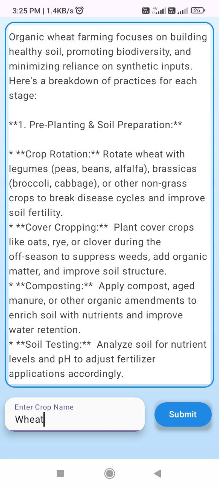
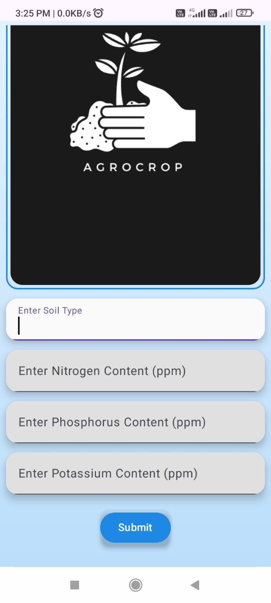
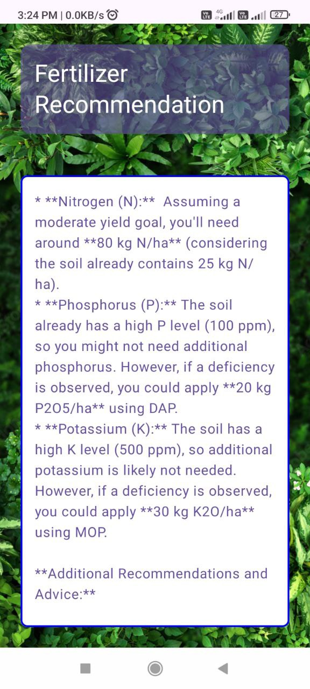
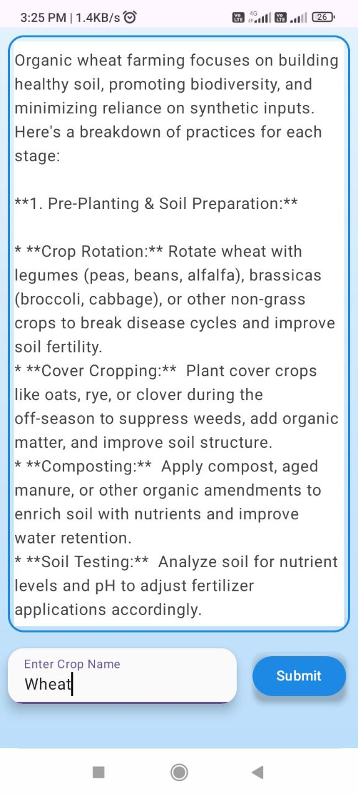
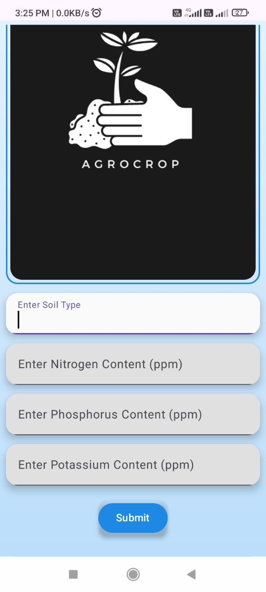
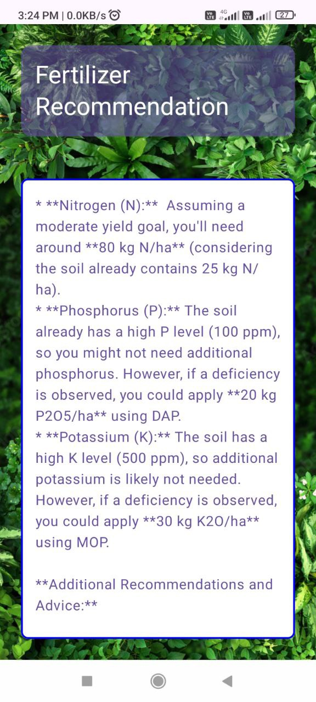
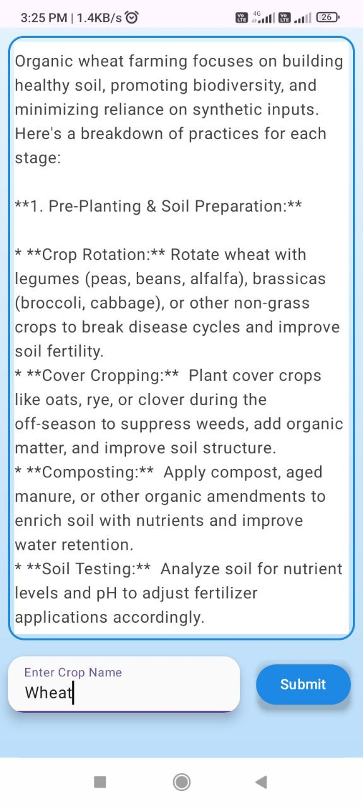
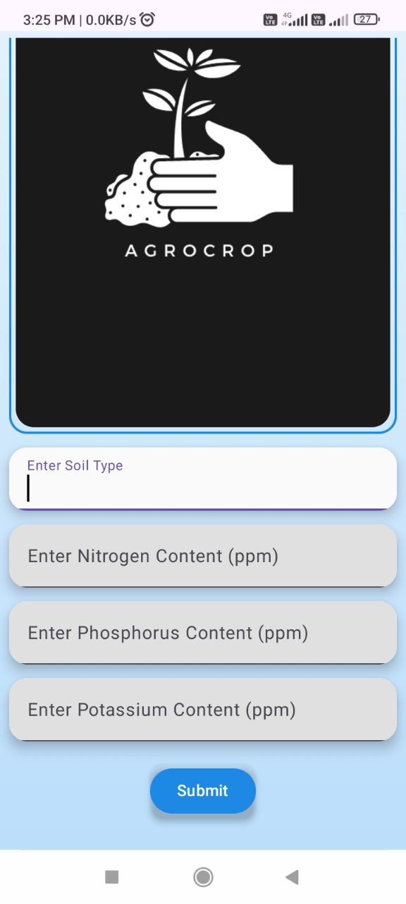
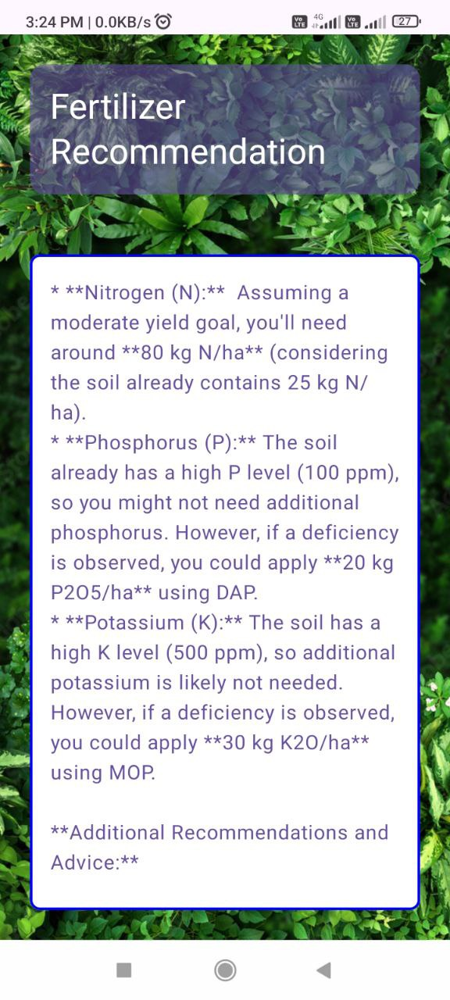

AgroCrop is an Android app designed to help farmers by recommending fertilizers, predicting the best crop for a given soil, and offering organic farming tips. This project was built using modern mobile development tools and cloud-hosted APIs.
During this project, I mastered various technologies including Android development with Jetpack Compose, Python with Flask, and setting up a server using AWS EC2 and Gunicorn. Additionally, I learned web hosting and DNS settings to bring everything together.


